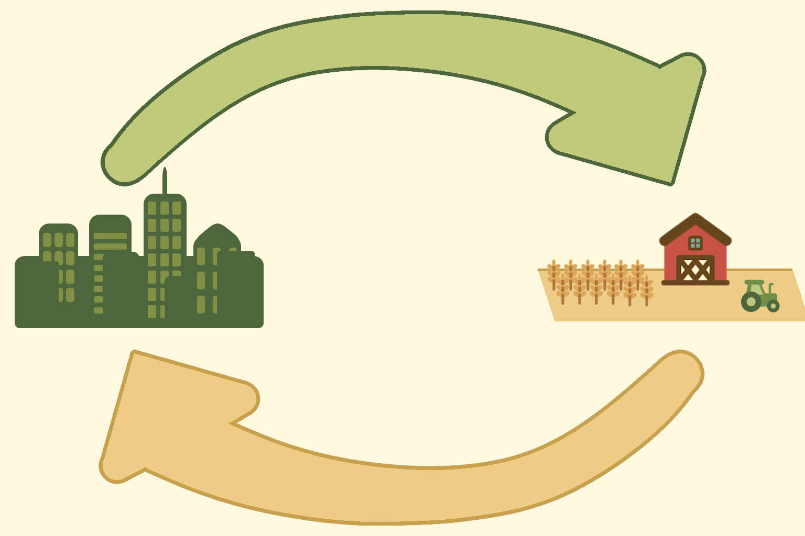
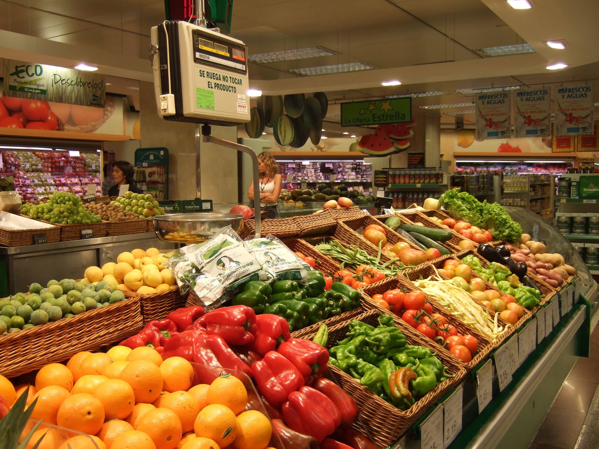
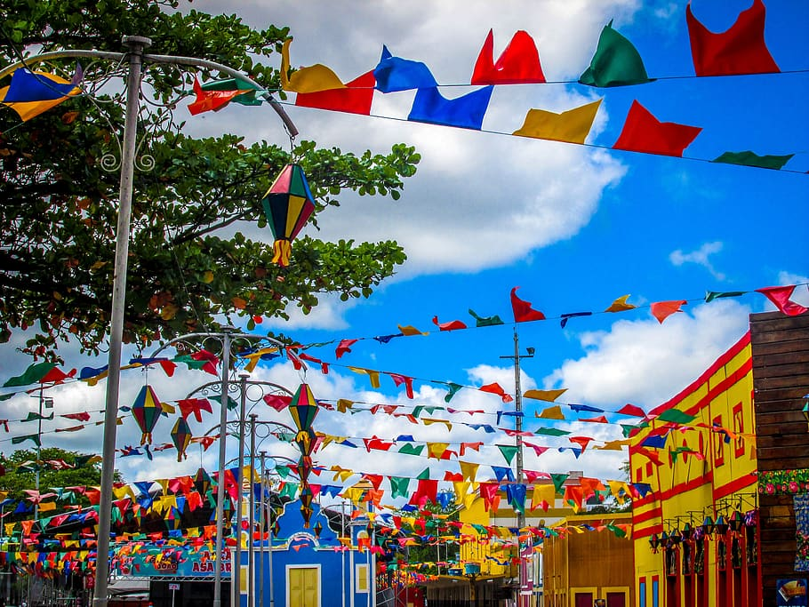

Tecnologia que aproxima
Drones, sensores e aplicativos estão revolucionando o campo, tornando as atividades agrícolas mais eficientes e conectadas. Mas você sabia que grande parte dessa tecnologia é desenvolvida em centros urbanos?
Quero saber!Da cidade para o campo
É na cidade que estão localizados os laboratórios, startups e universidades que criam as inovações usadas no campo, mostrando como a conexão entre cidade e campo é essencial para o avanço da agricultura moderna.
Descubra como o campo e a cidade se conectam!
Hoje em dia, o campo e a cidade não vivem separados, eles trocam experiências o tempo todo! Clique nos ícones abaixo para explorar como essa parceria acontece na prática.
Mais próximos do que nunca
No passado, o campo era visto como um lugar isolado, com práticas manuais e pouca conexão com o que acontecia nas cidades. Mas isso mudou. Hoje, as áreas rurais e urbanas se conectam por meio de tecnologias, comércio e cultura, criando uma relação de parceria e troca constante.
 Voltar aos temasTecnologia no campo
Tratores com GPS, drones, irrigação automatizada e sementes melhoradas mostram que o campo se modernizou. Com essas inovações, o agricultor consegue produzir mais, com menos desperdício e com alimentos de melhor qualidade para abastecer as cidades.
Voltar aos temasDo campo para a cidade
O campo também é fundamental para as grandes cidades, hoje, os alimentos que saem das plantações do campo não ficam mais restritos a feiras locais. Com a logística moderna e apoio do governo, muitos pequenos produtores conseguem vender para mercados, escolas e até exportar seus produtos, gerando renda e oportunidades.
 Voltar aos temasA cultura do campo na cidade
A cultura do campo enriquece a vida urbana de várias formas, indo muito além de um prato de comida, como as festas juninas, a música sertaneja e a culinária caipira. Essas são algumas tradições que nasceram na roça e hoje fazem parte da cidade.
 Voltar aos temasEducação, pesquisa e políticas públicas
O campo se fortalece com apoio de pesquisas feitas em universidades, como o melhoramento de sementes, e com políticas públicas que oferecem crédito rural, programas de irrigação e capacitação para pequenos produtores. Isso só é possível graças à conexão entre campo e cidade.
Voltar aos temas🤖 Bônus: Faça você mesmo!
- Objetivo: Criar um medidor de umidade do solo
Agora que você entendeu como funciona a conexão entre campo e cidade, que tal montar seu próprio medidor de umidade do solo, usando Arduino e materiais de robótica? Clique no ícone abaixo e explore esse projeto!